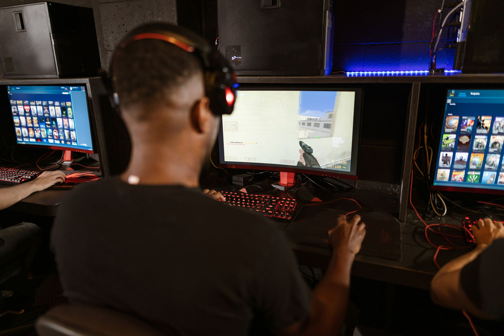

The challenge of losing competitive momentum
Momentum in esports is more than just a string of victories; it is a state of collective confidence where players trust their instincts and their teammates. When a team hits a slump, that trust can erode quickly, leading to hesitant plays and a breakdown in communication during high-pressure rounds.
For arT, the experience of losing that edge is a familiar but frustrating hurdle. He explains that once a team stops winning, the focus often shifts from playing proactively to playing not to lose. This defensive mindset frequently leads to further losses, creating a negative cycle that is difficult to break without a fundamental shift in perspective.
Shifting focus to new opportunities
Rather than dwelling on past failures or analyzing every single mistake from previous matches, arT believes the key to recovery is forward-looking optimism. He emphasizes that the team must recognize the present moment as a clean slate, allowing them to implement new strategies without the baggage of recent defeats.
We have to look ahead and realize we have a new opportunity here to redefine how we play and how we interact as a unit.
This mindset shift allows the players to experiment with more aggressive tactics and rediscover the synergy that initially made them successful. By treating the current phase of their career as a new opportunity, the team can rebuild their confidence from the ground up.
Tactical adjustments in the CS2 meta
Beyond the mental game, regaining momentum requires a deep dive into the current Counter-Strike 2 meta. The game is constantly evolving, with map updates and weapon balance changes shifting the way professional teams approach utility usage and site executes.
arT and his squad are focusing on these technical refinements to ensure that their mental resilience is backed by a solid tactical foundation. Without this balance, confidence alone is rarely enough to secure victories against the world's elite teams.
The importance of roster stability and chemistry
One of the biggest factors in maintaining momentum is the stability of the roster. When players are comfortable in their roles and have a deep understanding of their teammates' tendencies, they can execute complex plays with minimal verbal communication.
However, when a team struggles, there is often a temptation to make sudden roster changes. arT suggests that internal cohesion is often more valuable than raw individual talent. Learning to navigate a slump together can actually make a team stronger in the long run by forging tighter bonds and better conflict-resolution skills.
Looking ahead to future tournaments
As the competitive calendar fills up, the pressure to perform immediately is immense. The team is now focusing on specific milestones and smaller tournaments to build a series of small wins, which eventually snowball into the larger momentum they desire.
The goal is not just to win, but to win convincingly. By dominating specific aspects of the game, such as pistol rounds or late-game clutches, the team can send a signal to the rest of the scene that they are returning to form.
The broader impact on the CS2 ecosystem
The struggle arT describes is reflective of many teams currently navigating the transition to CS2. The shift in engine and gameplay mechanics has leveled the playing field, allowing underdog teams to challenge established giants and forcing veterans to relearn the game.
We see this trend across the board, where roster movements are becoming the primary way teams attempt to shock their system and regain lost momentum. A great example of this strategy in action is when sdy rejoins Monte: A Major Boost for the CS2 Roster, showcasing how a key addition can instantly revitalize a team's trajectory.
Ultimately, the ability to bounce back from a slump defines the legacy of a professional player. For arT, the path forward is clear: stop looking at the rearview mirror and start focusing on the opportunities that lie ahead in the server.
See Also
If you enjoyed this Esports News article, check out sdy rejoins Monte: A Major Boost for the CS2 Roster for more useful reading.